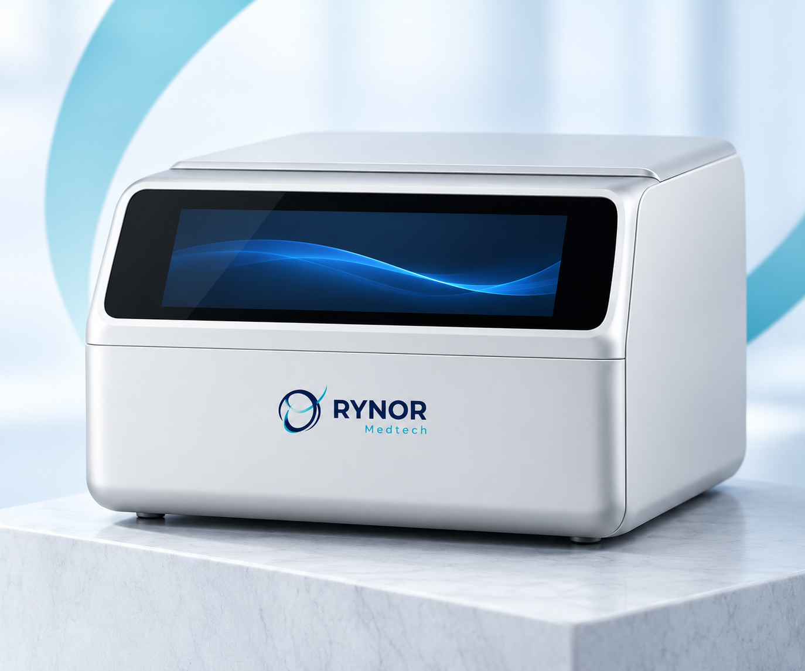

Our machine
A new perspective on peritoneal dialysis.
Meet the RYNOR automated peritoneal dialysis system: a device in development, with clinical trials as the next major milestone.
Preparing for clinical trials
Machine and supplies in development. Not yet available for sale.

The RYNOR system
A clear vision.
A considered exterior.
Our development programme brings together an automated peritoneal dialysis machine and a planned range of supporting supplies.
The exterior concept features a wide front display and a closed front lid. This preview introduces the product’s visual direction while development continues.
- Development stage
- Preparing for clinical trials
- Product range
- Machine, fluid bags, tubing, catheters and accessories
- Availability
- Planned future launch; not currently available for sale
Our development journey
Progress, with a clear view of what comes next.
We will share verified updates as the programme moves forward. A launch date and final product information will be announced when they are ready.
Discuss clinical collaboration- Current stage
Preparation for clinical trialsThe machine is in development and the team is preparing for the next stage of clinical evaluation.
- Clinical and regulatory milestones
Evaluation and the required regulatory steps come before commercial availability. No certifications or approvals are claimed.
- A coordinated future launch
The machine and planned supply range are intended to launch together. Timing will be communicated as the programme progresses.
The supporting range
One machine.
A complete planned range.
Explore 2 L and 5 L dialysis fluid bags, APD and CAPD tubing, peritoneal dialysis catheters, mini-caps and disinfection accessories.
Explore planned supplies